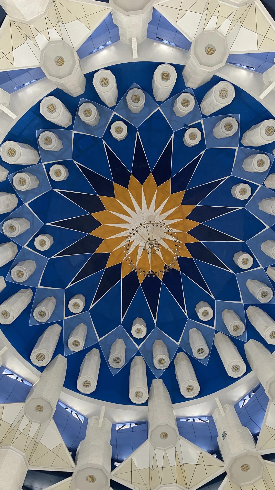
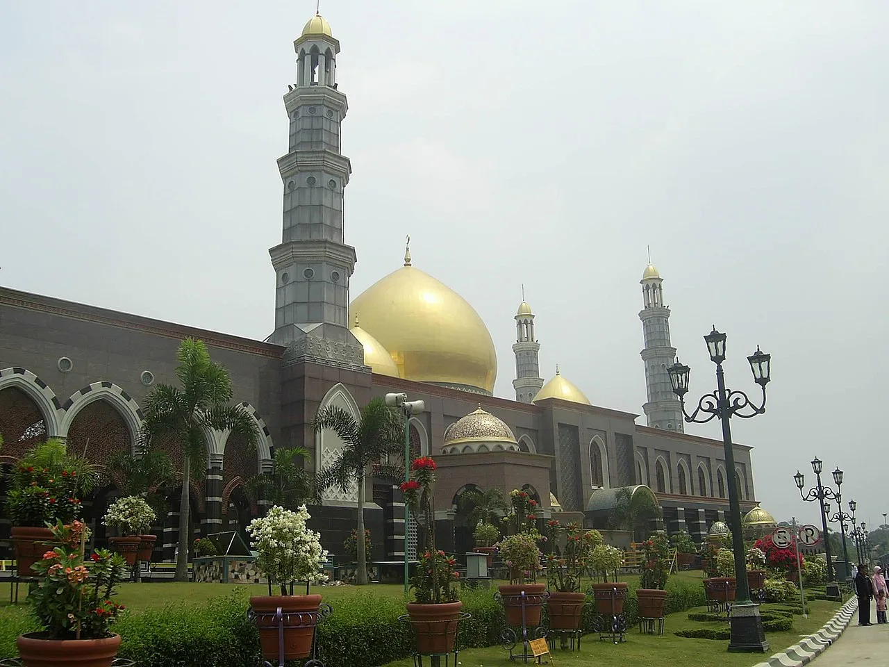
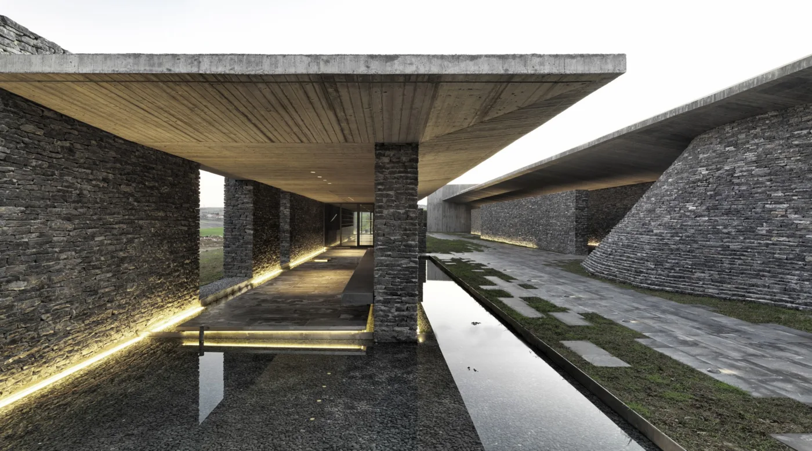
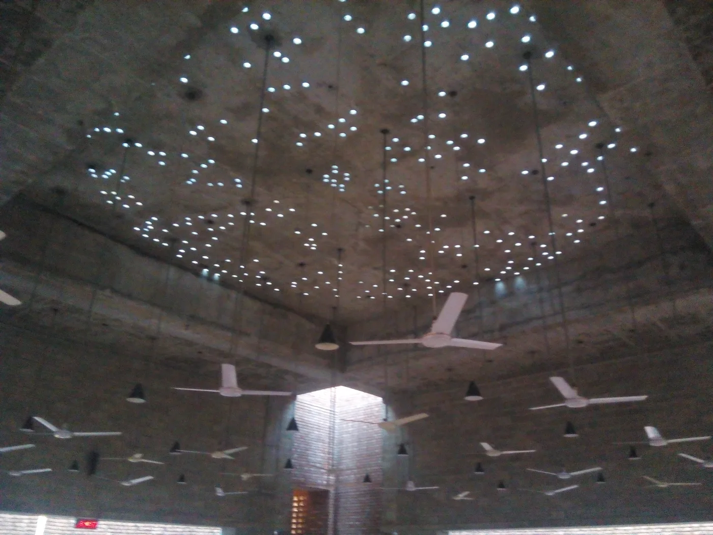

Accueil › Blog › 6 mosquées insolites qui sortent des sentiers battus
Insolite · 7 min de lecture · 2026-03-09
6 mosquées insolites qui sortent des sentiers battus
Pas de dôme, pas de minaret, une couleur qui détonne ou un matériau improbable : ces six mosquées ont en commun de rompre, chacune à sa façon, avec l'image la plus attendue de l'architecture mosquée. Deux figurent déjà parmi nos 20 mosquées incontournables ; les quatre autres méritaient elles aussi le détour.






La Grande Mosquée de Djenné, une ville entière en terre crue
Impossible de parler d'insolite sans commencer par Djenné, au Mali : c'est tout simplement le plus grand édifice en terre crue (banco) du monde. Chaque année, avant la saison des pluies, toute la ville participe au « crépissage », une fête collective où l'on ré-enduit les murs de terre fraîche à mains nues. Les torons de palmier qui hérissent la façade ne sont pas décoratifs : ce sont des échafaudages permanents, plantés dans le mur, qui permettent cet entretien annuel indispensable à la survie du bâtiment.
La Grande Mosquée de Xi'an, sans dôme ni minaret
À l'autre extrême esthétique, la Grande Mosquée de Xi'an, en Chine, ne ressemble à aucune autre mosquée du monde : ni dôme, ni minaret visibles, mais une succession de cours et de pavillons de bois aux toitures incurvées, strictement identiques dans leur composition aux temples chinois traditionnels. Seule l'orientation est-ouest de son axe, contraire aux temples chinois classiques orientés nord-sud, trahit sa fonction : elle pointe vers La Mecque.
La mosquée aux 99 coupoles de Makassar
En Indonésie, la mosquée Al-Asmaul Husna, plus connue sous le nom de « mosquée aux 99 coupoles » (Masjid 99 Kubah), pousse un symbole islamique jusqu'à l'extrême architectural : son toit est littéralement composé de 99 petites coupoles, une pour chacun des 99 noms attribués à Dieu dans la tradition musulmane (les Asmaul Husna). Construite sur un terre-plein gagné sur la mer à Makassar, dans le sud de l'île de Sulawesi, vue de l'intérieur, la coupole centrale forme une étoile éclatante entourée de ce chapelet de mini-dômes, un motif que l'on ne retrouve dans aucune autre mosquée au monde.
La mosquée au dôme d'or de Depok
Toujours en Indonésie, la mosquée Dian Al-Mahri, surnommée « mosquée au dôme d'or » (Masjid Kubah Emas), assume un autre genre de démesure : ses coupoles sont recouvertes de plaques d'or véritable. Financée par une fondation privée et inaugurée en 2006 dans la banlieue de Depok, près de Jakarta, elle est devenue l'un des monuments religieux les plus photographiés du pays, visible de loin grâce à l'éclat de ses dômes dorés qui tranche avec le vert et le blanc habituels des grandes mosquées d'Asie du Sud-Est.
La mosquée creusée dans une colline, en Turquie
Près d'Istanbul, la mosquée de Sancaklar prend le contre-pied total de l'imagerie classique : conçue par l'architecte Emre Arolat et achevée en 2012, elle est littéralement enfouie dans le flanc d'une colline, sans dôme ni minaret traditionnel — seule une fine colonne de pierre, à peine plus haute qu'un lampadaire, en tient lieu. À l'intérieur, la lumière filtre depuis une fente au sommet du volume, dans une ambiance minérale presque monacale. Le projet a été distingué par l'un des plus prestigieux prix internationaux d'architecture, l'Aga Khan Award for Architecture.
La mosquée au plafond étoilé de Dhaka
À Dhaka, capitale du Bangladesh, la mosquée Bait ur Rouf, conçue par l'architecte Marina Tabassum et achevée en 2012, renonce elle aussi au dôme et au minaret : un simple cylindre de brique nue, financé par une donatrice privée sur un terrain modeste de quartier. Sa prouesse se cache au plafond : des puits de lumière circulaires percent la voûte de béton et projettent, la nuit venue, un semis de points lumineux qui évoque un ciel étoilé au-dessus des fidèles. Le bâtiment a remporté l'Aga Khan Award for Architecture en 2016, une récompense rare pour une mosquée de quartier au budget aussi modeste.
À découvrir
Mosquées citées dans cet article
Grande Mosquée de Djenné
Le plus grand édifice en terre crue du monde, recrépi chaque année par toute la ville en fête.
Grande Mosquée de Xi'an
Une mosquée sans dôme ni minaret : pavillons, pagode et jardins, chef-d'œuvre de l'islam chinois.
À propos du contenu de cette page — Ce site propose un contenu éditorial et culturel rédigé avec soin et le souci du respect des traditions religieuses concernées ; il ne constitue pas un avis théologique ou une source d'autorité religieuse. Malgré nos vérifications, des erreurs, imprécisions ou approximations peuvent subsister. Si vous en repérez une, merci de nous la signaler via la page Contact ou par e-mail à qibla.mosk@gmail.com — nous la corrigerons avec gratitude.